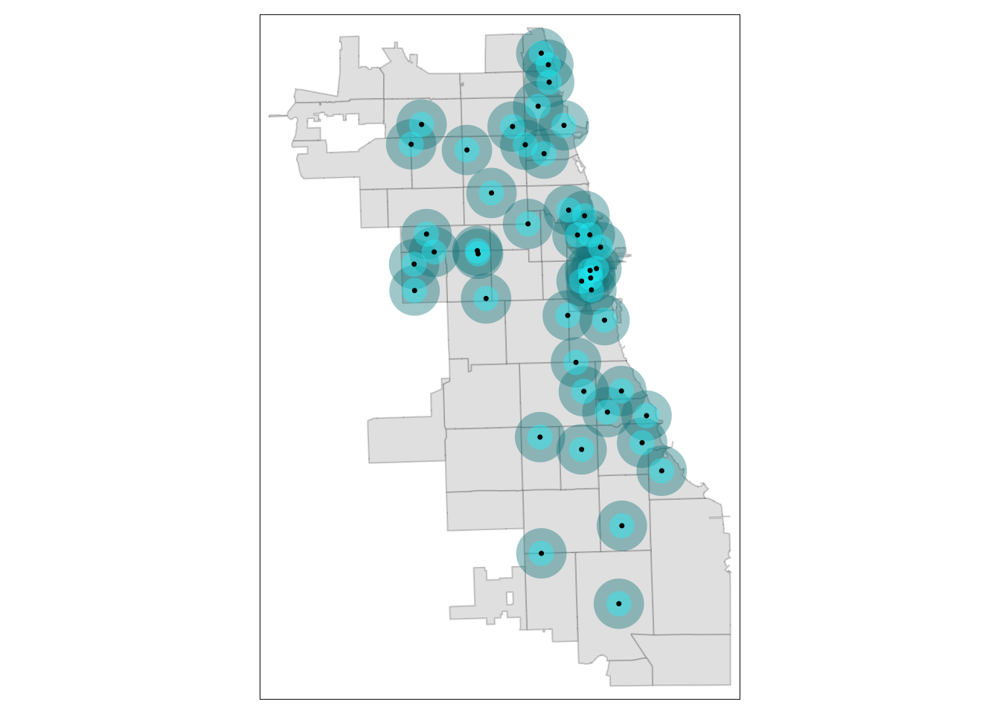
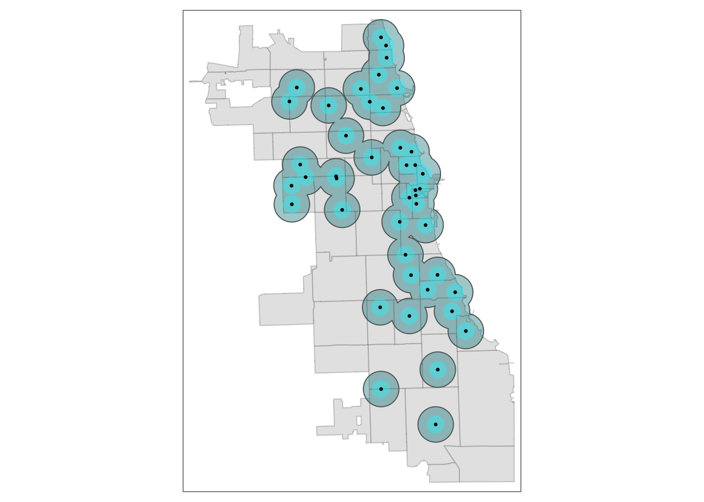
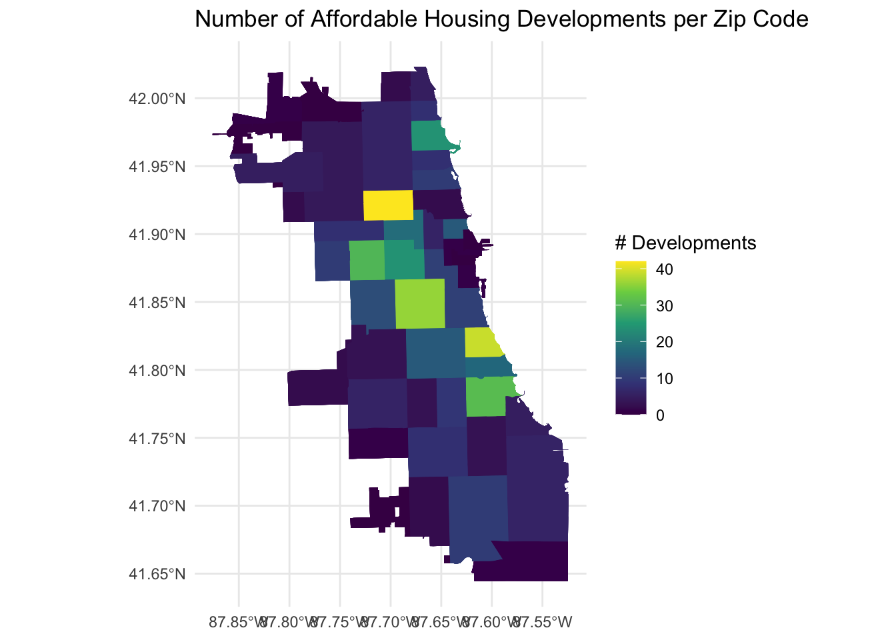
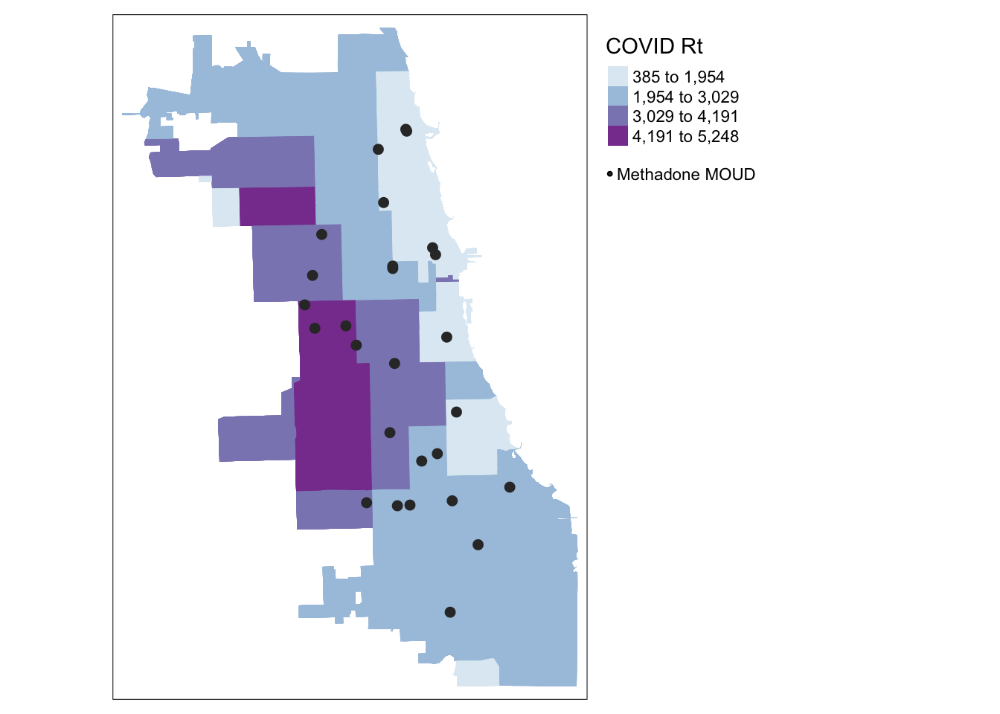
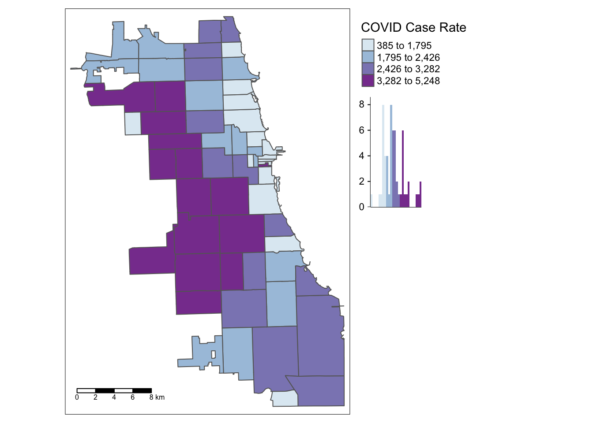
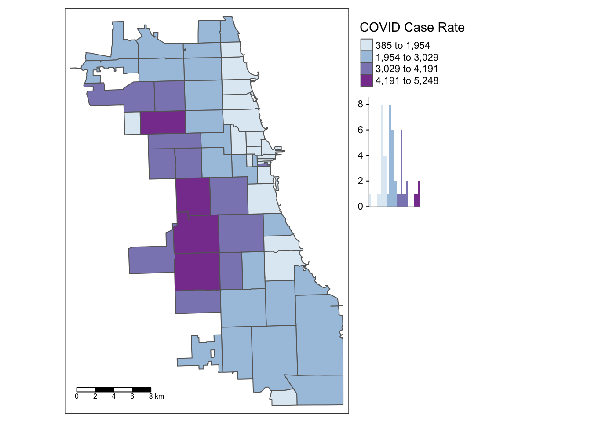
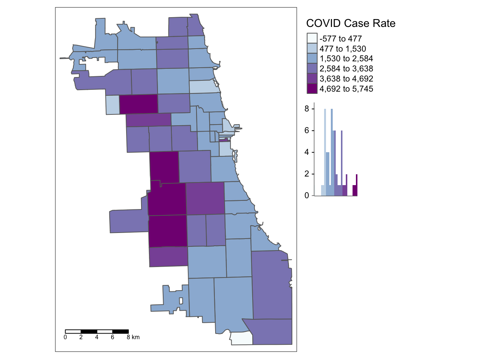
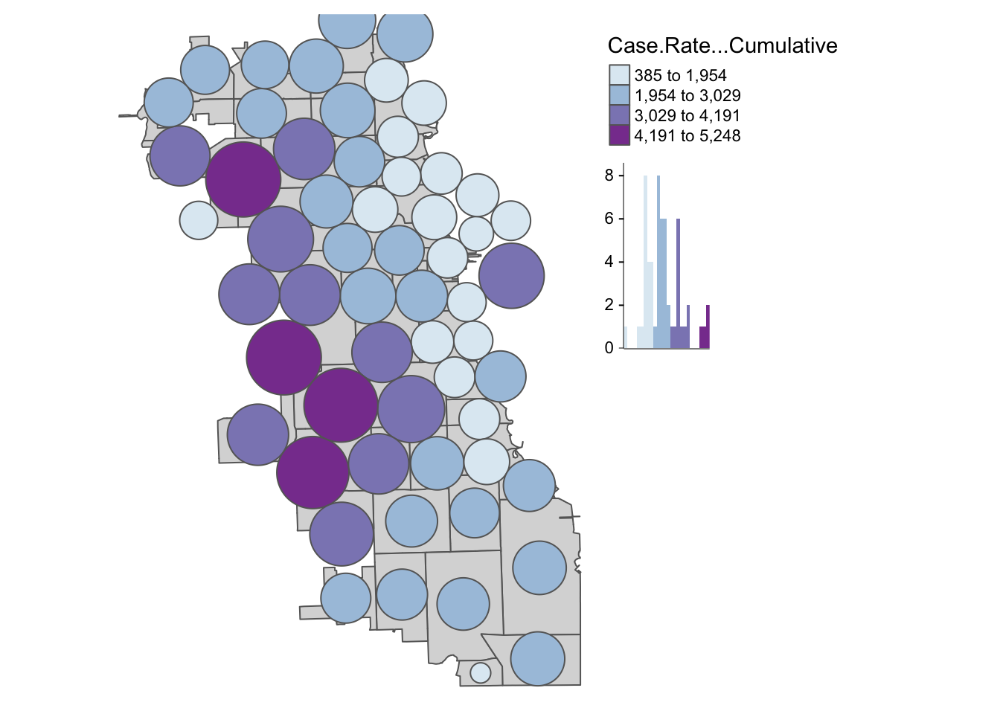
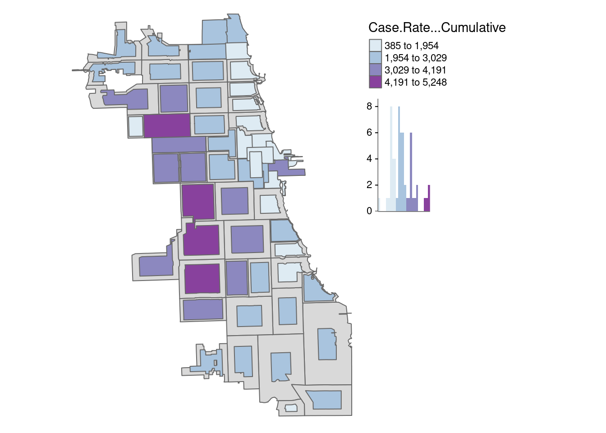

B Research Design & Analysis in R
In this Appendix overview, we continue to delve in further to working with R to support research design, hypothesis generation, and data anlaysis. Be sure to read through Module 5 alongside these activities.
B.1 Environment Setup
First, let’s import the library needed for our analysis.
Let’s also bring in our data, cleaned from the previous module. In this case, we’ll read from saved files and load in. Grab the data for this activity and the following ones [here](:::tools Tools
Download the Activity Datasets
While you will use your own data for your project, practice with ours. Please download and unzip this file to get started: SDOHPlace-ResearchDesignAnalysis.zip
This dataset includes data prepped and merged in the previous module. ::: ).
B.2 Variable Calculations
B.2.1 Buffers
Activity: Farmers Markets in Chicago
This activity focuses on utilizing data from Chicago’s farmers’ markets, specifically the farmers_markets_2012 dataset.
Farmers’ markets are vital for health and well-being, providing access to fresh, locally-grown produce and supporting sustainable food systems. They offer diverse, nutritious food options, often at affordable prices, and foster community connections and local agriculture support. The presence and density of farmers’ markets in a neighborhood significantly influence residents’ food accessibility.
B.2.1.1 Add Dataset
First, read in and inspect the shapefile file.
## Reading layer `farmers_markets_2012' from data source
## `/Users/kamariamassey/Documents/GitHub/healthyregions/sdhoplace-toolkit/data/farmers_markets_2012.shp'
## using driver `ESRI Shapefile'
## Simple feature collection with 44 features and 10 fields
## Geometry type: POINT
## Dimension: XY
## Bounding box: xmin: 1138319 ymin: 1831122 xmax: 1190755 ymax: 1946403
## Projected CRS: NAD83 / Illinois East (ftUS)## Simple feature collection with 6 features and 10 fields
## Geometry type: POINT
## Dimension: XY
## Bounding box: xmin: 1165549 ymin: 1841668 xmax: 1182421 ymax: 1946403
## Projected CRS: NAD83 / Illinois East (ftUS)
## LOCATION INTERSECTI DAY_ START_TIME END_TIME START_DATE
## 1 Bridgeport 35th & Wallace Saturday 7:00 AM 1:00 pm 2012-06-16
## 2 Glenwood Sunday Market 6950 N Glenwood Sunday 9:00 AM 3:00 PM 2012-06-03
## 3 Loyola's Farmers Market 6556 N Sheridan Rd Monday 3:00 PM 7:00 PM 2012-06-11
## 4 Seaway Bank Farmer's Market 645 E 87th St Wednesday 9:00 AM 2:00 PM 2012-07-25
## 5 Beverly W 95th St & S Longwood Dr Sunday 7:00 AM 1:00 PM 2012-05-13
## 6 Bronzeville 4400 S. Cottage Grove Ave Saturday 8:00 AM 1:00 PM 2012-06-16
## END_DATE WEBSITE TYPE LINK_ACCEP geometry
## 1 2012-10-06 http://www.chicagofarmersmarkets.us Weekly YES POINT (1172813 1881658)
## 2 2012-10-28 www.glenwoodsundaymarket.org Independent YES POINT (1165549 1946403)
## 3 2012-10-15 http://www.luc.edu/farmersmarket/ Independent YES POINT (1167025 1943978)
## 4 2012-09-26 http://www.seawaybank.us Independent NO POINT (1182421 1847449)
## 5 2012-10-28 http://www.chicagofarmersmarkets.us Weekly YES POINT (1165573 1841668)
## 6 2012-10-27 http://www.qcdc.org Independent YES POINT (1182325 1875662)We can see that the point data is already in a CRS that uses feet for distance, which is great. If the dataset had a different CRS, we would need to reproject to a new CRS. (See Module 4 for a refresh.)
Just to be sure, map the data with a basemap.
## tmap mode set to interactive viewingWhen mapping points in tmap, we can use the tm_dots or tm_bubble paramter. The bubbles function can make points bigger or smaller, depending on some attribute of the points. Here, we just want to map the point on its own, so we use tm_dots.
B.2.1.2 Create Buffers
Next, we can create a buffer. We use the st_buffer function to calculate, passing the points and distance measure.
To calculate a half mile buffer, we will use 2,640 feet as our input (since 2640 ft = 0.5 mile).
Inspect right away! Map with your point data.
tm_basemap("CartoDB.Voyager") +
tm_shape(markets) + tm_dots(alpha=0.5) +
tm_shape(markets.buffer) + tm_borders(alpha = 0.6)You’ll need to zoom in a bit to see the buffers! Let’s try plotting using a standard map, with the Zip Codes we used previously.
First, read in the zips:
## Reading layer `chizips' from data source
## `/Users/kamariamassey/Documents/GitHub/healthyregions/sdhoplace-toolkit/data/chizips.geojson'
## using driver `GeoJSON'
## Simple feature collection with 58 features and 63 fields
## Geometry type: MULTIPOLYGON
## Dimension: XY
## Bounding box: xmin: 1108622 ymin: 1813892 xmax: 1205199 ymax: 1951669
## Projected CRS: NAD83 / Illinois East (ftUS)Next, let’s overlay and add the buffers.
## tmap mode set to plottingtm_shape(zips) + tm_borders(alpha=0.3) + tm_fill(col="gray90") +
tm_shape(markets.buffer) + tm_fill(col = "turquoise1", alpha = 0.4) +
tm_shape(markets) + tm_dots(size = 0.03) 
Tip
To change the color in tmap, use the “col” parameter in most cases. R will recognize several standard color names, as well as codes used. Check out the R Color Palette Cheat Sheet for more ideas.
It’s easy to add another buffer layer, and update your code with two! Let’s add a 1-mile buffer as well.
markets.buffer1 <- st_buffer(markets, 5280)
tm_shape(zips) + tm_borders(alpha=0.3) + tm_fill(col="gray90") +
tm_shape(markets.buffer1) + tm_fill(col = "turquoise4", alpha = 0.4) +
tm_shape(markets.buffer) + tm_fill(col = "turquoise1", alpha = 0.4) +
tm_shape(markets) + tm_dots(size = 0.03) 
B.2.1.3 Dissolve Buffers
By viewing individual buffers distinctly, and playing with alpha (i.e. transparency) of the buffer visually, we can begin to get an idea of how intersecting areas of multiple markets look. Areas with more markets will have denser, intersecting buffers.
In some cases, the plentitude of resources nearby may not be as important as knowing whether or not a place is serviced by the resource at all.
If we consider the buffer as a service area, by dissolving boundaries of buffers, we can generate a uniform service area. To do this, we will dissolve the boundaries of buffers. It’s also known as a buffer union.
We’ll create two unions; one for the half mile buffers, and one for the mile buffers. Then, we visualize to inspect immediately.
buffer.union <- st_union(markets.buffer)
buffer.union1 <- st_union(markets.buffer1)
tm_shape(zips) + tm_borders(alpha=0.3) + tm_fill(col="gray90") +
tm_shape(buffer.union1) + tm_polygons(col = "turquoise4", alpha = 0.4) +
tm_shape(buffer.union) + tm_fill(col = "turquoise1", alpha = 0.4) +
tm_shape(markets) + tm_dots(size = 0.03) 
In this visualization, we switched to tm_polygons for the 1-mile buffer union to automatically add a border. This border cleanly highlights the union.
Tip
You can use st_union to dissolve any other vector layers or spatial objects. It unions input geometries, merging to produce a resulting geometry with no overlaps. It’s a very powerful function.
B.2.2 Distance Metrics
Distance to the nearest resource is a common metric used to capture the availability of a resource, and in this tutorial we demonstrate how to calculate a minimum distance value from a ZCTA centroid to a set of resources.
Each zip code will be assigned a “minimum distance access metric” as a value that indicates access to resources from that zip code.
B.2.2.1 Centroid Calculation
First, let’s calculate a centroid.
## Warning: st_centroid assumes attributes are constant over geometriesPlot to confirm it looks right!
tm_shape(zips) + tm_borders(alpha=0.3) + tm_fill(col="gray90") +
tm_shape(zipCentroid) + tm_dots(col = "violetred1", size = 0.03) 
B.2.2.2 Standardize CRS
Next, as we will be working with two spatial datasets to generate the calculation, we need to ensure they’re in the same CRS. First, inspect the CRS.
## Coordinate Reference System:
## User input: NAD83 / Illinois East (ftUS)
## wkt:
## PROJCRS["NAD83 / Illinois East (ftUS)",
## BASEGEOGCRS["NAD83",
## DATUM["North American Datum 1983",
## ELLIPSOID["GRS 1980",6378137,298.257222101,
## LENGTHUNIT["metre",1]]],
## PRIMEM["Greenwich",0,
## ANGLEUNIT["degree",0.0174532925199433]],
## ID["EPSG",4269]],
## CONVERSION["SPCS83 Illinois East zone (US Survey feet)",
## METHOD["Transverse Mercator",
## ID["EPSG",9807]],
## PARAMETER["Latitude of natural origin",36.6666666666667,
## ANGLEUNIT["degree",0.0174532925199433],
## ID["EPSG",8801]],
## PARAMETER["Longitude of natural origin",-88.3333333333333,
## ANGLEUNIT["degree",0.0174532925199433],
## ID["EPSG",8802]],
## PARAMETER["Scale factor at natural origin",0.999975,
## SCALEUNIT["unity",1],
## ID["EPSG",8805]],
## PARAMETER["False easting",984250,
## LENGTHUNIT["US survey foot",0.304800609601219],
## ID["EPSG",8806]],
## PARAMETER["False northing",0,
## LENGTHUNIT["US survey foot",0.304800609601219],
## ID["EPSG",8807]]],
## CS[Cartesian,2],
## AXIS["easting (X)",east,
## ORDER[1],
## LENGTHUNIT["US survey foot",0.304800609601219]],
## AXIS["northing (Y)",north,
## ORDER[2],
## LENGTHUNIT["US survey foot",0.304800609601219]],
## USAGE[
## SCOPE["Engineering survey, topographic mapping."],
## AREA["United States (USA) - Illinois - counties of Boone; Champaign; Clark; Clay; Coles; Cook; Crawford; Cumberland; De Kalb; De Witt; Douglas; Du Page; Edgar; Edwards; Effingham; Fayette; Ford; Franklin; Gallatin; Grundy; Hamilton; Hardin; Iroquois; Jasper; Jefferson; Johnson; Kane; Kankakee; Kendall; La Salle; Lake; Lawrence; Livingston; Macon; Marion; Massac; McHenry; McLean; Moultrie; Piatt; Pope; Richland; Saline; Shelby; Vermilion; Wabash; Wayne; White; Will; Williamson."],
## BBOX[37.06,-89.28,42.5,-87.02]],
## ID["EPSG",3435]]## Coordinate Reference System:
## User input: NAD83 / Illinois East (ftUS)
## wkt:
## PROJCRS["NAD83 / Illinois East (ftUS)",
## BASEGEOGCRS["NAD83",
## DATUM["North American Datum 1983",
## ELLIPSOID["GRS 1980",6378137,298.257222101,
## LENGTHUNIT["metre",1]]],
## PRIMEM["Greenwich",0,
## ANGLEUNIT["degree",0.0174532925199433]],
## ID["EPSG",4269]],
## CONVERSION["SPCS83 Illinois East zone (US Survey feet)",
## METHOD["Transverse Mercator",
## ID["EPSG",9807]],
## PARAMETER["Latitude of natural origin",36.6666666666667,
## ANGLEUNIT["degree",0.0174532925199433],
## ID["EPSG",8801]],
## PARAMETER["Longitude of natural origin",-88.3333333333333,
## ANGLEUNIT["degree",0.0174532925199433],
## ID["EPSG",8802]],
## PARAMETER["Scale factor at natural origin",0.999975,
## SCALEUNIT["unity",1],
## ID["EPSG",8805]],
## PARAMETER["False easting",984250,
## LENGTHUNIT["US survey foot",0.304800609601219],
## ID["EPSG",8806]],
## PARAMETER["False northing",0,
## LENGTHUNIT["US survey foot",0.304800609601219],
## ID["EPSG",8807]]],
## CS[Cartesian,2],
## AXIS["easting (X)",east,
## ORDER[1],
## LENGTHUNIT["US survey foot",0.304800609601219]],
## AXIS["northing (Y)",north,
## ORDER[2],
## LENGTHUNIT["US survey foot",0.304800609601219]],
## USAGE[
## SCOPE["Engineering survey, topographic mapping."],
## AREA["United States (USA) - Illinois - counties of Boone; Champaign; Clark; Clay; Coles; Cook; Crawford; Cumberland; De Kalb; De Witt; Douglas; Du Page; Edgar; Edwards; Effingham; Fayette; Ford; Franklin; Gallatin; Grundy; Hamilton; Hardin; Iroquois; Jasper; Jefferson; Johnson; Kane; Kankakee; Kendall; La Salle; Lake; Lawrence; Livingston; Macon; Marion; Massac; McHenry; McLean; Moultrie; Piatt; Pope; Richland; Saline; Shelby; Vermilion; Wabash; Wayne; White; Will; Williamson."],
## BBOX[37.06,-89.28,42.5,-87.02]],
## ID["EPSG",3435]]It appears they are both using EPSG:3435 as their ID, so we should be set! If not, go back and transform to the standard CRS (that will use a meaningful distance unit).
B.2.2.3 Find Nearest Resource
First, we’ll develop an index that identifies which market is nearest to the zip code centroid using the st_nearest_feature function. It will return the index of the object that is nearest, so we will subset the resources by the index to get the nearest object.
We can use the str or structure function to inspect the structure of the index for clarity. There are 58 items, corresponding to the 58 zip codes. In each slot, we have the row ID of the market that was identified as the nearest.
## int [1:58] 32 32 32 8 16 7 18 31 23 33 ...B.2.2.4 Calculate Distance
Now we can calculate the distance between each zip centroid and its nearest market. Inspect.
## Units: [US_survey_foot]
## [1] 1319.2011 596.7483 1422.5178 1130.9705 2669.0223 1897.2897We have distance metrics! However, they’re in feet. While we can just multiple by a conversion factor to get miles, our spatial object would still indicate the unit as feet. Here, we can bring it a new package, units, to switch units for us.
## Units: [mi]
## [1] 0.2498492 0.1130207 0.2694168 0.2141994 0.5054977 0.3593359We are ready to bind our minimum distance vector back to our Zips! Use a “column bind” function, cbind, to get it done. Inspect.
B.2.2.5 Visualize
Put it all together in a map.
tm_shape(zips_final) +
tm_polygons("minDist_mi", style = 'quantile', palette = "GnBu", n=5,
title = "Min.Distance (mi)") +
tm_shape(markets) + tm_dots(size = 0.03) +
tm_layout(main.title = "Distance from Zip Centroid \n to Nearest Farmers Market",
main.title.position = "center",
main.title.size = 1)
If needed, write and save your merged file for later use.
B.3 Statistical Mapping
Activity: Mapping the Covid-19 Pandemic
We’ve played a bit with thematic maps previously, but not gone into depth just yet. In these activities, we’ll use different statistical mapping techniques to examine one week of case rates of Covid-19 in Chicago, in the first fall of the pandemic. We’ll use the same zip file we’ve been using thus far.
B.3.1 Choropleth Maps
We will be plotting the spatial distribution of our health outcome variable for the city of Chicago using three methods.
- Quantile
- Natural Breaks
- Standard Deviation
For a more detailed overview of choropleth mapping and methods, check out related GeoDa Center Documentation.
B.3.1.1 Quantiles
A quantile map is based on sorted values for the variable that are then grouped into bins such that each bin has the same number of observations. It is obtained by setting style = ‘quantile’ and n = no of bins arguments in tm_fill() or tm_polygons().
We generate a choropleth map of case rate data using quantile bins, and the Blue-Purple color palette. As shared in a tip above, you can find an R color cheatsheet useful for identifying palette codes here. Let’s add a histogram of the data so we can see how the different data classifications change our map.
tm_shape(zips_final) +
tm_polygons("Case.Rate...Cumulative",
style="quantile", pal="BuPu",
legend.hist=T, n=4,
title = "COVID Case Rate", ) +
tm_scale_bar(position = "left") +
tm_layout(legend.outside = TRUE, legend.outside.position = "right")
Already we can generate some insight. Areas on the far West side of the city have some of the highest case rates.
How might changing our bins from 4 to 6 change the map?
tm_shape(zips_final) +
tm_polygons("Case.Rate...Cumulative",
style="quantile", pal="BuPu",
legend.hist=T, n=6,
title = "COVID Case Rate", ) +
tm_scale_bar(position = "left") +
tm_layout(legend.outside = TRUE, legend.outside.position = "right")There is a bit more variability when adding more bins to the quantile map, and the data classification breaks in our histogram seem more intuitive than the first version..
B.3.1.2 Natural Breaks
Natural breaks or jenks distribution uses a nonlinear algorithm to cluster data into groups such that the intra-bin similarity is maximized and inter-bin dissimilarity is minimized. It is obtained by setting style = ‘jenks’ and n = no. of bins.
As we can see, the jenks method generally better classifies the dataset in review than the quantile distribution. With only four bins, the algorithm has already detected an optimal break in the data.
tm_shape(zips_final) +
tm_polygons("Case.Rate...Cumulative",
style="jenks", pal="BuPu",
legend.hist=T, n=4,
title = "COVID Case Rate", ) +
tm_scale_bar(position = "left") +
tm_layout(legend.outside = TRUE, legend.outside.position = "right")
B.3.1.3 Standard Deviation
Standard deviation is a statistical technique type of map based on how much the data differs from the mean. While you can update whatever number of bins you’d like, the standard deviation map will always have a specific set (6 bins), as the numbers will diverge from the mean systematically.
tm_shape(zips_final) +
tm_polygons("Case.Rate...Cumulative",
style="sd", pal="BuPu",
legend.hist=T, n=4,
title = "COVID Case Rate", ) +
tm_scale_bar(position = "left") +
tm_layout(legend.outside = TRUE, legend.outside.position = "right")
Tip
Never, ever stop with your first choropleth map or default setting! Choropleth mapping is a statistical mapping technique and requires a careful approach, accordingly. Test at least 2-3 data classification breaks with varying number of bins. Search for consistent patterns across multiple styles, and then select the style that best characterizes that pattern.
B.3.1.4 Thematic Map Panel
Who is being most impacted by this heightened burden of Covid in the fall of 2020?
To facilitate data discovery, we likely want to explore multiple maps at once. In our dataset, we have multiple additional variables characterizing social, economic, and other dimensions of the Chicago environment. Here we’ll generate maps for multiple variables of social and demographic groups, and plot them as a map panel.
First, assign maps as variables.
COVID <- tm_shape(zips_final) + tm_fill("Case.Rate...Cumulative",
style="jenks", pal="Reds", n=4, title = "COVID Rt")
Senior <- tm_shape(zips_final) + tm_fill("ovr65P",
style="jenks", pal="BuPu", n=4)
NoHS <- tm_shape(zips_final) + tm_fill("noHSP",
style="jenks", pal="BuPu", n=4)
BlkP <- tm_shape(zips_final) + tm_fill("blackP",
style="jenks", pal="BuPu", n=4)
Latnx <- tm_shape(zips_final) + tm_fill("hispP",
style="jenks", pal="BuPu", n=4)
WhiP <- tm_shape(zips_final) + tm_fill("whiteP",
style="jenks", pal="BuPu", n=4) Next, use the tmap_arrange function to map them all at once!

From the results, we see that cumulative COVID outcomes for one week in September 2020 seemed to have some geographic correlation with the Latinx/Hispanic community in Chicago. At the same time, low high school diploma rates are also concentrated in these areas, and there is some intersection with other variables considered. What are additional variables you could bring in to refine your approach? Perhaps percentage of essential workers; a different age group; internet access? What about linking in health outcomes like Asthma, Hypertension, and more at a similar scale?
In modern spatial epidemiology, associations must never be taken at face value. For example, we know that it is not “race” but “racism” that drives multiple health disparities – simply looking at a specific racial/ethnic group is not enough. Thus exploring multiple variables and nurturing a curiosity to understand these complex intersections will support knowledge discovery.
B.3.2 Cartograms
As a special treat, let’s also look at Cartograms, another thematic mapping technique. We need to bring in a new package, cartogram to generate these. More details in their documentation.
B.3.2.1 Circles Cartogram
First, let’s create a classic cartogram, with bubbles being larger or smaller based on size. The package uses the non-overlapping Circles Cartogram (Dorling el al. 1996) algorithm. We add the zip code boundaries for reference, and can map them as a regular spatial object using tmap.
carto.Dorling <- cartogram_dorling(zips_final, "Case.Rate...Cumulative", k = 2)
tm_shape(zips_final) + tm_polygons() +
tm_shape(carto.Dorling) + tm_polygons("Case.Rate...Cumulative",
style="jenks", pal="BuPu", legend.hist=T, n=4,) +
tm_layout(legend.outside = TRUE, frame = FALSE, legend.outside.position = "right") Adjust the “k” parameter to get the cartogram bubbles to a manageable size, as it may be difficult to interpret if they grow too much outside of the study area space.
In this view, we can see the downtown zip code become much more obvious. Because it has a such a small area size (due to high population density), it is visually minimized in traditional view.
B.3.2.2 Distortion Algorithm
Finally, let’s try the rubber sheet distortion algorithm (Dougenik et al. 1985) cartogram. We adjust the k parameter again to get the map to be readable
carto.distort <- cartogram_ncont(zips_final, "Case.Rate...Cumulative", k = 1)
tm_shape(zips_final) + tm_polygons() +
tm_shape(carto.distort) + tm_polygons("Case.Rate...Cumulative",
style="jenks", pal="BuPu", legend.hist=T, n=4,) +
tm_layout(legend.outside = TRUE, frame = FALSE, legend.outside.position = "right")
How does this view of the data shape your understanding?